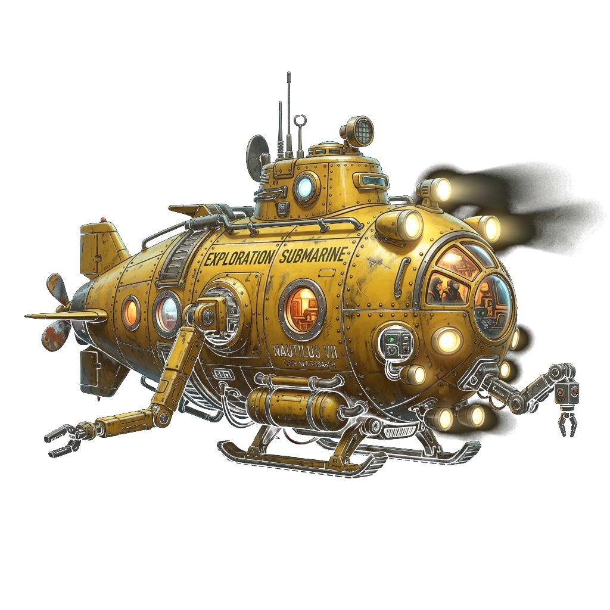
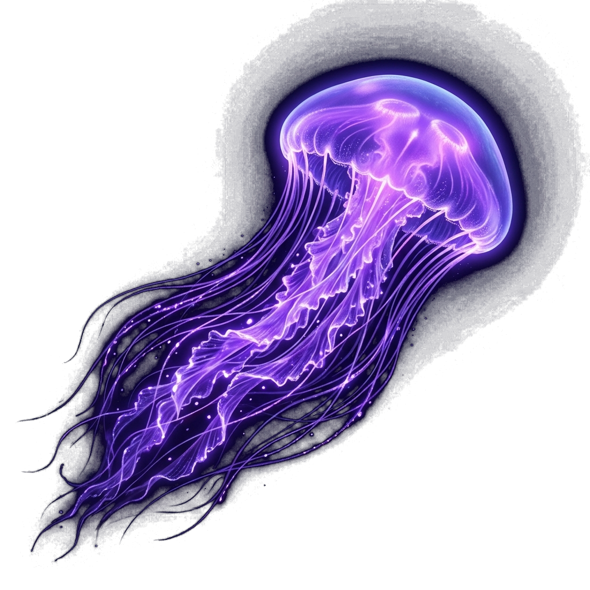
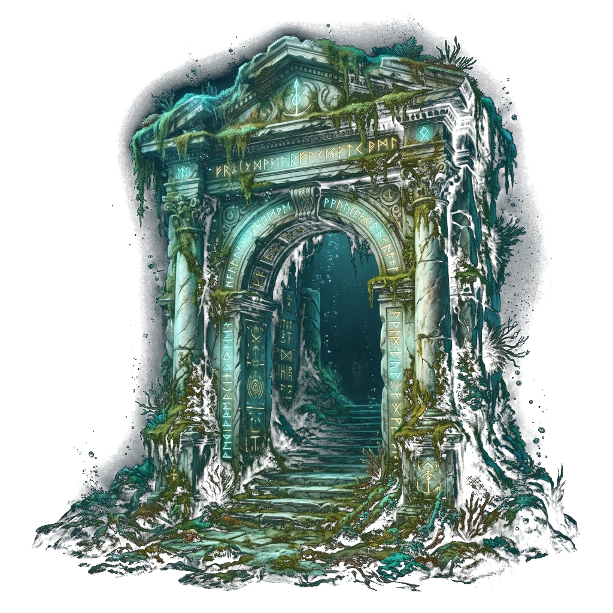

Our deep-water explorer features dual carbon-titanium shells, rated to withstand pressures up to 600 atmospheres.
Depth Max: 6,000m
A species that glows in the dark through chemical reactions, utilizing luciferase proteins to create neon violet pulses.
Luminosity: 80%
An ancient, moss-covered monolith displaying glowing geometric runes. Est. origin: pre-glacial period.
Age: 12,000+ YearsA multi-axis parallax journey into the Earth's final frontier.
The uppermost layer of the ocean extending down to 200 meters. Powered by solar radiation, this zone is home to phytoplankton, coral reefs, and the vast majority of marine biodiversity.
Fading from blue to indigo between 200 and 1,000 meters. Sunlight here is too dim to support photosynthesis, forcing creatures to adapt with massive eyes and bioluminescent lures.
Encompassing everything below 1,000 meters in absolute black. The pressure is crushing (up to 8 tons per square inch) and the temperatures hover just above freezing, creating an alien evolutionary landscape.